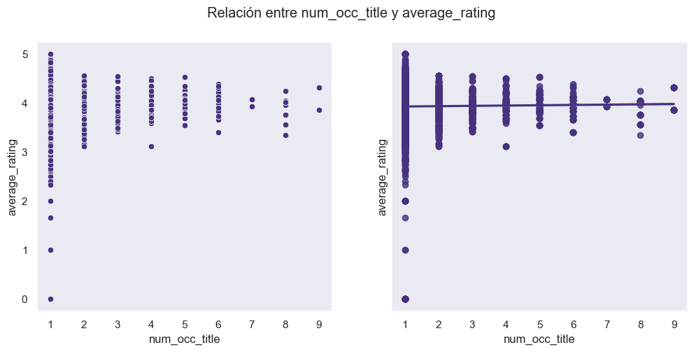
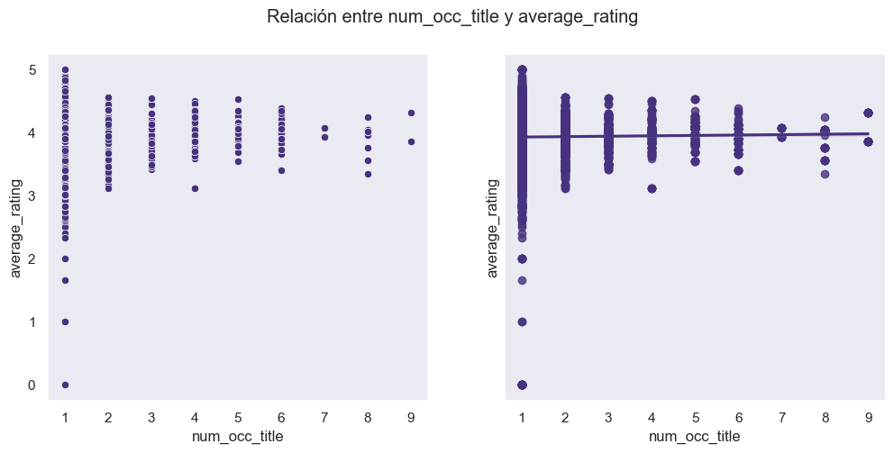

Metodología y Desarrollo#
Metodología#
Para este proyecto se utiliza una base de datos en formato csv de libros reseñados por más de 2 millones de usuarios en la plataforma Goodreads hasta el 2020. Esta base de datos contiene las siguientes variables:
BookID: La identificación del libro de acuerdo con su nivel en la plataforma de Goodreads.Title: título del libro.Authors: autor/es del libro.Average_rating: el puntaje acumulado de la calificación en la plataforma.Isbn: identificador único de 10 dígitos.Isbn13: identificador único de 13 dígitos.Language_code: idioma en el que está escrito originalmente.Num_pages: número de páginas.Ratings_count: cantidad de usuarios que han calificado el libro.Text_reviews: cantidad de reseñas escritas que ha recibido el libro.Publication_date: fecha de publicación.Publisher: casa editorial que publica el libro.
Para llevar a cabo la predicción de las calificaciones de libros en la plataforma Goodreads, se implementó el modelo Stacking. Se utilizó este modelo mejorado de machine learning ya que es una técnica que permite mayor reducción del sesgo y de la varianza en las predicciones y, por ende, permite mejorar el rendimiento de la misma. Para demostrarlo, se realizaron otros modelos de regresión como AdaBoost, Ridge, Random Forest y SVM que fueron comparados entre sí con su RMSE y su R^2.
En primer lugar, el proyecto se considera de tipo cuantitativo al ser un estudio que funciona para hacer estimaciones de las futuras calificaciones de nuevos libros en el mercado. Inicialmente se realizó un análisis exploratorio de los datos para comprenderlos, determinar patrones, identificar valores atípicos, visualizar los datos y prepararlos para la formulación de modelos. Para la limpieza de los datos, se calculó la correlación de las variables.
En segundo lugar, se formularon los modelos de regresión tradicionales y por último se realizó el modelo Stacking. Este último se basa en el ensamblaje de modelos de aprendizaje automático para lograr mejores predicciones, más robustas y con menos sesgos. Para su evaluación se utilizaron métricas como ´RMSE´, que al ser cercano a 0, el modelo demuestra un ajuste perfecto y el ´R^2´, que al ser cercano a 1, el modelo indica una mayor precisión.

Desarrollo#
EDA#
# Librerias EDA
import warnings
warnings.filterwarnings('ignore')
import numpy as np
import pandas as pd
import seaborn as sns
import matplotlib.pyplot as plt
from sklearn.preprocessing import OrdinalEncoder
Cargar los datos#
Los datos serán obtenidos de un archivo CSV que contienen el listado de más de 11.000 libros y sus características. Es posible encontrar el dataset en Kaggle en este enlace: Goodreads Book Datasets With User Rating 2M.
# Extraer los datos del archivo .csv
archivo_csv = 'C:/ProgramasML/ML/Ejemplosclase/Proyecto/Archivos/books.csv'
# Crear un DataFrame para almacenar los datos combinados
databooks = pd.read_csv(archivo_csv)
# Overview de los datos
print('Cantidad de datos: ', databooks.shape)
print('Listado de columnas y 5 primeras filas: ', databooks.columns)
databooks.head()
Cantidad de datos: (11127, 12)
Listado de columnas y 5 primeras filas: Index(['bookID', 'title', 'authors', 'average_rating', 'isbn', 'isbn13',
'language_code', ' num_pages', 'ratings_count', 'text_reviews_count',
'publication_date', 'publisher;;;'],
dtype='object')
| bookID | title | authors | average_rating | isbn | isbn13 | language_code | num_pages | ratings_count | text_reviews_count | publication_date | publisher;;; | |
|---|---|---|---|---|---|---|---|---|---|---|---|---|
| 0 | 1 | Harry Potter and the Half-Blood Prince (Harry ... | J.K. Rowling/Mary GrandPré | 4.57 | 0439785960 | 9.780440e+12 | eng | 652.0 | 2095690.0 | 27591.0 | 9/16/2006 | Scholastic Inc.;;; |
| 1 | 2 | Harry Potter and the Order of the Phoenix (Har... | J.K. Rowling/Mary GrandPré | 4.49 | 0439358078 | 9.780439e+12 | eng | 870.0 | 2153167.0 | 29221.0 | 9/1/2004 | Scholastic Inc.;;; |
| 2 | 4 | Harry Potter and the Chamber of Secrets (Harry... | J.K. Rowling | 4.42 | 0439554896 | 9.780440e+12 | eng | 352.0 | 6333.0 | 244.0 | 11/1/2003 | Scholastic;;; |
| 3 | 5 | Harry Potter and the Prisoner of Azkaban (Harr... | J.K. Rowling/Mary GrandPré | 4.56 | 043965548X | 9.780440e+12 | eng | 435.0 | 2339585.0 | 36325.0 | 5/1/2004 | Scholastic Inc.;;; |
| 4 | 8 | Harry Potter Boxed Set Books 1-5 (Harry Potte... | J.K. Rowling/Mary GrandPré | 4.78 | 0439682584 | 9.780440e+12 | eng | 2690.0 | 41428.0 | 164.0 | 9/13/2004 | Scholastic;;; |
Exploración y limpieza de datos#
# Revisar columnas, cantidad de datos y tipo
databooks.info()
<class 'pandas.core.frame.DataFrame'>
RangeIndex: 11127 entries, 0 to 11126
Data columns (total 12 columns):
# Column Non-Null Count Dtype
--- ------ -------------- -----
0 bookID 11127 non-null object
1 title 11098 non-null object
2 authors 11098 non-null object
3 average_rating 11098 non-null float64
4 isbn 11098 non-null object
5 isbn13 11098 non-null float64
6 language_code 11098 non-null object
7 num_pages 11098 non-null float64
8 ratings_count 11098 non-null float64
9 text_reviews_count 11098 non-null float64
10 publication_date 11098 non-null object
11 publisher;;; 11098 non-null object
dtypes: float64(5), object(7)
memory usage: 1.0+ MB
Verificar duplicados y eliminarlos
# Verificar si existen duplicados en el DataFrame
databooks[databooks.duplicated()]
# Eliminar los datos duplicados
databooks = databooks.drop_duplicates()
Comprobar si hay datos faltantes
datos_books_NA = databooks.isna().sum()
pd.concat([datos_books_NA], axis=1, sort = False, keys = ['datos_books NA'])
| datos_books NA | |
|---|---|
| bookID | 0 |
| title | 29 |
| authors | 29 |
| average_rating | 29 |
| isbn | 29 |
| isbn13 | 29 |
| language_code | 29 |
| num_pages | 29 |
| ratings_count | 29 |
| text_reviews_count | 29 |
| publication_date | 29 |
| publisher;;; | 29 |
En total faltan 29 datos, estas filas serán eliminadas.
databooks = databooks.dropna(subset=['title'])
print('Cantidad de datos posterior a la eliminación de las filas en blanco: ', databooks.shape)
Cantidad de datos posterior a la eliminación de las filas en blanco: (11098, 12)
Revisión y corrección de algunas columnas
Convertir la columna ‘bookID’ en tipo entero.
databooks['bookID'] = databooks['bookID'].astype(int)
Convertir la columna ‘publication_date’ en una columna tipo fecha con un formato mm/dd/aaaa
databooks['publication_date'] = pd.to_datetime(databooks['publication_date'], format='%m/%d/%Y', errors='coerce')
Agregar columna con solo el año
databooks['year'] = pd.DatetimeIndex(databooks['publication_date']).year
Renombrar las columnas ‘num_pages’ y ‘publisher;;;’
databooks.rename(columns = {' num_pages': 'num_pages'}, inplace=True)
databooks.rename(columns = {'publisher;;;': 'publisher'}, inplace=True)
Descripción general de los datos
databooks.describe()
| bookID | average_rating | isbn13 | num_pages | ratings_count | text_reviews_count | publication_date | year | |
|---|---|---|---|---|---|---|---|---|
| count | 11098.000000 | 11098.000000 | 1.109800e+04 | 11098.000000 | 1.109800e+04 | 11098.00000 | 11098 | 11098.000000 |
| mean | 21317.591278 | 3.934580 | 9.759833e+12 | 336.514777 | 1.798103e+04 | 543.10975 | 2000-08-30 07:43:44.256622848 | 2000.174085 |
| min | 1.000000 | 0.000000 | 8.987060e+09 | 0.000000 | 0.000000e+00 | 0.00000 | 1900-01-01 00:00:00 | 1900.000000 |
| 25% | 10304.250000 | 3.770000 | 9.780345e+12 | 192.000000 | 1.042500e+02 | 9.00000 | 1998-08-01 00:00:00 | 1998.000000 |
| 50% | 20301.000000 | 3.960000 | 9.780584e+12 | 299.000000 | 7.480000e+02 | 47.00000 | 2003-03-01 00:00:00 | 2003.000000 |
| 75% | 32106.750000 | 4.140000 | 9.780872e+12 | 416.000000 | 5.016750e+03 | 238.00000 | 2005-10-01 00:00:00 | 2005.000000 |
| max | 45641.000000 | 5.000000 | 9.790008e+12 | 6576.000000 | 4.597666e+06 | 94265.00000 | 2020-03-31 00:00:00 | 2020.000000 |
| std | 13092.700518 | 0.348448 | 4.434734e+11 | 241.288321 | 1.126229e+05 | 2579.41135 | NaN | 8.250339 |
Tratamiento de datos de la columna ‘language_code’
Contar los datos únicos de la columna tipo object llamada ‘language_code’
# Obtener la cuenta de valores únicos en la columna
conteo_valores_unicos = databooks['language_code'].nunique()
# Usamos value_counts() para contar la frecuencia de cada valor único y luego generamos un gráfico de barras
plt.figure(figsize=(8, 5))
databooks['language_code'].value_counts().plot(kind='bar')
# Configura las etiquetas y el título
sns.set(style="dark")
sns.set_palette("viridis")
plt.xlabel('Valor Único')
plt.ylabel('Frecuencia')
plt.title(f'Valores Únicos en "language_code" (Total: {conteo_valores_unicos})')
# Mostrar el gráfico
plt.show()
Unificar en un solo código todos los que sean lenguaje Ingles, dado que en los datos existen 6 diferentes.
encoding = {'language_code':{'en-US': 'eng', 'en-GB': 'eng', 'en-CA': 'eng'}}
databooks.replace(encoding, inplace=True)
Aplicar OrdinalEncoder a la columna ‘language_code’ para convertirla en una columna numérica, es decir, el código de cada lengua ahora corresponderá a un número entero.
enc = OrdinalEncoder()
enc.fit(databooks[['language_code']])
databooks[['language_code']] = enc.fit_transform(databooks[['language_code']])
Agregar nueva columna que contendrá el número de ocurrencias de titulo.
databooks['num_occ_title'] = databooks.groupby('title')['title'].transform('count')
Calcular algunos ratios
databooks['rate_occ_title'] = databooks['average_rating'] *databooks['num_occ_title']
databooks['rate_text_review'] = databooks['average_rating'] * databooks['text_reviews_count']
databooks['rate_rating_count'] = databooks['average_rating'] * databooks['ratings_count']
databooks['rate_per_pages'] = databooks['average_rating'] * databooks['num_pages']
databooks.info()
<class 'pandas.core.frame.DataFrame'>
Index: 11098 entries, 0 to 11126
Data columns (total 18 columns):
# Column Non-Null Count Dtype
--- ------ -------------- -----
0 bookID 11098 non-null int32
1 title 11098 non-null object
2 authors 11098 non-null object
3 average_rating 11098 non-null float64
4 isbn 11098 non-null object
5 isbn13 11098 non-null float64
6 language_code 11098 non-null float64
7 num_pages 11098 non-null float64
8 ratings_count 11098 non-null float64
9 text_reviews_count 11098 non-null float64
10 publication_date 11098 non-null datetime64[ns]
11 publisher 11098 non-null object
12 year 11098 non-null int32
13 num_occ_title 11098 non-null int64
14 rate_occ_title 11098 non-null float64
15 rate_text_review 11098 non-null float64
16 rate_rating_count 11098 non-null float64
17 rate_per_pages 11098 non-null float64
dtypes: datetime64[ns](1), float64(10), int32(2), int64(1), object(4)
memory usage: 1.5+ MB
Por otro lado, también eliminaremos las columnas ‘bookID’, ‘isbn’ y ‘isbn13’, estos son identificadores únicos para libros (ISBN), que se le asignan cuando el libro es publicado para identificarlo internacionalmente, por ende, ya que nuestro objetivo es predecir si un libro será exitoso antes de ser publicado, no podemos tener como requisito unas variables que se le asignarán posterior a su publicación, adicionalmente, el consecutivo único que se le asigne no será una variable que influencie su éxito.
databooks = databooks.drop(['bookID'],axis=1)
databooks = databooks.drop(['isbn'],axis=1)
databooks = databooks.drop(['isbn13'],axis=1)
Eliminar las columnas authors, publisher y title debido a que son características diferentes para cada libro y no sumarán mucho en nuestro análisis.
databooks = databooks.drop(['title'],axis=1)
databooks = databooks.drop(['authors'],axis=1)
databooks = databooks.drop(['publisher'],axis=1)
Verificar correlación
# Grafico de correlación entre características.
sns.set(font_scale=1.1)
sns.set(style="dark")
sns.set_palette("viridis")
data_to_plot = databooks
corr_matrix = data_to_plot.corr()
mask = np.triu(np.ones_like(corr_matrix, dtype=bool))
plt.figure(figsize=(12, 7))
sns.heatmap(corr_matrix, annot=True, vmin=-1, vmax=1, cmap="coolwarm", mask=mask)
plt.show()
Del mapa de calor:
Es entendible la correlación entre los ratios y los conteos de variables como text_review, num_pages, entre otras, para este análisis eliminaremos la variable ‘text_reviews_count’, ya que tiene alta correlación con 2 variables y para nuestro objetivo tiene mayor peso e interés las variables ‘ratings_count’ y ‘rate_ratings_count’
Igualmente es natural que ‘publication_date’ y ‘year’ estén relacionadas, en este caso, eliminaremos la columna ‘publication_date’ y nos quedaremos con la columna ‘year’.
databooks = databooks.drop(['publication_date' ],axis=1)
databooks = databooks.drop(['text_reviews_count' ],axis=1)
Descripción de los datos posterior a la limpieza de datos.
databooks.describe()
| average_rating | language_code | num_pages | ratings_count | year | num_occ_title | rate_occ_title | rate_text_review | rate_rating_count | rate_per_pages | |
|---|---|---|---|---|---|---|---|---|---|---|
| count | 11098.000000 | 11098.000000 | 11098.000000 | 1.109800e+04 | 11098.000000 | 11098.000000 | 11098.000000 | 11098.000000 | 1.109800e+04 | 11098.000000 |
| mean | 3.934580 | 2.484592 | 336.514777 | 1.798103e+04 | 2000.174085 | 1.241845 | 4.891006 | 2167.099640 | 7.224893e+04 | 1336.832801 |
| std | 0.348448 | 2.539050 | 241.288321 | 1.126229e+05 | 8.250339 | 0.875965 | 3.503451 | 10400.763114 | 4.537598e+05 | 1027.557764 |
| min | 0.000000 | 0.000000 | 0.000000 | 0.000000e+00 | 1900.000000 | 1.000000 | 0.000000 | 0.000000 | 0.000000e+00 | 0.000000 |
| 25% | 3.770000 | 2.000000 | 192.000000 | 1.042500e+02 | 1998.000000 | 1.000000 | 3.800000 | 35.280000 | 4.096725e+02 | 768.045000 |
| 50% | 3.960000 | 2.000000 | 299.000000 | 7.480000e+02 | 2003.000000 | 1.000000 | 4.000000 | 183.850000 | 2.942845e+03 | 1154.720000 |
| 75% | 4.140000 | 2.000000 | 416.000000 | 5.016750e+03 | 2005.000000 | 1.000000 | 4.230000 | 929.602500 | 1.976390e+04 | 1648.560000 |
| max | 5.000000 | 23.000000 | 6576.000000 | 4.597666e+06 | 2020.000000 | 9.000000 | 38.880000 | 379669.970000 | 1.650562e+07 | 30907.200000 |
Visualización de datos#
Para la visualización y análisis univariado y bivariado separaremos los datos en data (contendrá las características) y targue (variable de interés).
# Separar los datos entre data y target
data = databooks.drop(['average_rating'], axis=1)
target = databooks['average_rating']
Variable de interés
# Graficar el histograma de nuestra variable de interes 'average_rating'
sns.set(font_scale=1.5)
sns.set(style="dark")
sns.set_palette("viridis")
plt.figure(figsize=(8, 4))
plt.title('Rating de libros en Goodreads')
sns.distplot(databooks["average_rating"], axlabel="average_rating");
plt.ylabel('Frecuencia')
plt.show()
Analísis univariado
Graficar histograma y boxplot de cada una de las variables.
num_cols = data.select_dtypes(include=np.number).columns.tolist()
for col in num_cols:
sns.set(font_scale=1.4)
sns.set(style="dark")
sns.set_palette("viridis")
print('Column: ', col)
print('Skew:', round(data[col].skew(), 2))
print('Kurtosis: ', round(data[col].kurtosis(), 2))
plt.figure(figsize = (14, 6))
plt.subplot(1, 2, 1)
data[col].hist(grid=False)
plt.subplot(1, 2, 2)
sns.boxplot(x=data[col])
plt.show()
Column: language_code
Skew: 5.77
Kurtosis: 32.86
Column: num_pages
Skew: 4.27
Kurtosis: 62.41

Column: ratings_count
Skew: 17.67
Kurtosis: 441.29
Column: year
Skew: -3.0
Kurtosis: 16.28
Column: num_occ_title
Skew: 5.01
Kurtosis: 29.26
Column: rate_occ_title
Skew: 4.98
Kurtosis: 29.55
Column: rate_text_review
Skew: 16.0
Kurtosis: 384.07
Column: rate_rating_count
Skew: 16.9
Kurtosis: 379.05
Column: rate_per_pages
Skew: 5.24
Kurtosis: 89.52
De las gráficas de análisis univariado:
El diagrama de caja y bigote se encarga de representar grupos de datos en sus cuartiles. En este caso, encontramos los siguientes patrones en nuestras variables:
language_code: los datos se encuentran agrupados en un solo valor, en este caso, el idioma inglés. No hay variabilidad notable entre los cuartiles inferior y superior. Asimismo, se visualizan gran cantidad de valores atípicos y que no se encuentran cerca de la mediana, estos son entonces los demás idiomas; demostrando también un sesgo de los datos hacia la derecha.
num_pages: los datos muestran una asimetría hacia la derecha, con un agrupamiento de estos hacia la misma dirección. Es decir, la mayoría de los libros analizados son de un número de páginas muy bajo, en comparación con el máximo, de acuerdo con el gráfico. Existen también muchos valores atípicos, claramente porque los libros raramente suelen tener más de 1000 páginas.
ratings_counts: existe una concentración de los datos hacia la derecha, causando también una asimetría hacia la izquierda. Se notan muchos valores atípicos, teniendo en cuenta que hay libros con muchas más reseñas que otros.
text_reviews_counts: los datos se agrupan hacia la derecha, con una notable asimetría hacia esta dirección también. Se encuentran muchos valores atípicos, ya que de acuerdo con los datos, la mayoría de los libros tienen muy pocas reseñas, a pesar de que existan algunos con hasta más de 80.000.
year: se evidencia una clara agrupación de los datos en una década específica, logrando una asimetría de los datos hacia la izquierda. También se muestran valores atípicos como los años por debajo de 1980 y cercanos a la década del 2020.
num_occ_title: hay una concentración mayor de los datos en el número de ocurrencia 1, debido a que los valores atípicos se muestran que muy pocos de los libros de la base de datos se repiten. Esto muestra una notable asimetría a la derecha y un estrecho agrupamiento de los datos hacia la izquierda.
rate_occ_title: hay un agrupamiento de los datos hacia la derecha, con una mediana notable. También se evidencian datos atípicos y una asimetría hacia la derecha y poca variabilidad de los datos.
rate_weight: los datos se encuentran agrupados en un solo valor y su variabilidad es poca, casi que nula entre los cuartiles. Se notan muchos datos atípicos y una notable asimetría hacia la derecha.
rate_weight_2: existe gran proporción de datos atípicos con una clara concentración de los datos hacia el lado izquierdo, con un sesgo visible hacia la derecha.
rate_per_pages: aunque hay una mediana definida, también hay una concentración de los datos notablemente hacia la derecha, con muchos valores atípicos y una asimetría hacia la derecha.
Análisis bivariado
Crear graficas para análisis bivariado, en el que veremos todas nuestras columnas vs el promedio de calificación de cada libro ‘average_raiting’
def scatter_regplot(data, strx, stry):
sns.set(font_scale=1.4)
sns.set(style="dark")
sns.set_palette("viridis")
fig, ax = plt.subplots(1, 2, figsize=(12, 5), sharey=True)
sns.scatterplot(data=data, x=strx, y=stry, ax=ax[0])
sns.regplot(data=data, x=strx, y=stry, ax=ax[1]);
fig.suptitle('Relación entre %s y average_rating'%col)
for col in num_cols[1:5]:
scatter_regplot(databooks, col, 'average_rating')

 

De las gráficas de análisis bivariado:
Nota: Para el análisis bivariado solo tomamos algunas variables, evitamos los ratios y las variables categóricas que fueron codificadas como numéricas, al ser variables que directa o indirectamente dependen de otras o que representan un consecutivo de una característica.
num_pages vs average_rating: se puede observar que su relación es directamente proporcional, es decir a media que el número de páginas aumenta su promedio de rating en Goodreads aumenta, también es evidente que la materia de los libros del estudio tiene entre 1 y 1000 páginas, los libros con una cantidad de paginas mayor a 2000 son atípicos.
ratings_count vs average_rating: la línea de tendencia también nos indica una relación de proporcionalidad directa, un poco más leve que la que vimos con el número de páginas.
year vs average_rating: en este caso la relación entre las variables indica que son levemente inversamente proporcionales, es decir, los libros publicados hace muchos años tienen mejor calificación en promedio, cabe anotar que existe una mayor cantidad de libros publicados después de 1.980.
num_occ_title vs average_rating: no se observa una tendencia ni favorable ni desfavorable en la calificación que tiene los libros en relación con la cantidad de ocurrencias que tiene en la plataforma.
Modelos de regresión tradicionales#
# Librerias para Modelos
import numpy as np
import numpy as mean
from sklearn.model_selection import train_test_split
from sklearn.preprocessing import MinMaxScaler
from sklearn.preprocessing import StandardScaler
from sklearn.pipeline import Pipeline
from sklearn.model_selection import GridSearchCV, cross_val_score, RepeatedKFold
from sklearn.metrics import mean_squared_error, r2_score
from matplotlib import pyplot as plt
from sklearn.ensemble import AdaBoostRegressor
from sklearn.linear_model import LinearRegression
from sklearn.ensemble import RandomForestRegressor
from sklearn.linear_model import Ridge
from sklearn.svm import SVR
from sklearn.ensemble import StackingRegressor
División de los datos
# Renombrar nuestra división de los datos para facilidad durante la creación y evaluación de los modelos
X = data
y = target
# Dividir los datos en conjuntos de entrenamiento y prueba
X_train, X_test, y_train, y_test = train_test_split(X, y, test_size=0.3, random_state=68)
Modelo AdaBoost#
# Crear un pipeline con preprocesamiento, escalado y regresor AdaBoost
pipeline = Pipeline([
('scaler', MinMaxScaler()), # Escalar las características
('adaboost', AdaBoostRegressor()) # Regresor AdaBoost
])
# Definir el espacio de hiperparámetros para GridSearch
param_grid = {
'adaboost__n_estimators': [50, 100, 200], # Número de estimadores (árboles débiles)
'adaboost__learning_rate': [0.01, 0.1, 1] # Tasa de aprendizaje
}
# Crear un objeto GridSearchCV para buscar la mejor combinación de hiperparámetros
grid_search = GridSearchCV(pipeline, param_grid, cv=5, verbose=2, n_jobs=-1)
# Ajustar el modelo utilizando GridSearchCV en el conjunto de entrenamiento
grid_search.fit(X_train, y_train)
# Obtener el mejor modelo ajustado
best_model = grid_search.best_estimator_
# Realizar predicciones en el conjunto de prueba
y_pred = best_model.predict(X_test)
# Calcular las métricas de evaluación en el conjunto de prueba
mse_ada = mean_squared_error(y_test, y_pred)
r2_ada = r2_score(y_test, y_pred)
# Imprimir las métricas en el conjunto de prueba
print("Métricas en el conjunto de prueba:")
print(f"Error cuadrático medio (MSE): {mse_ada:.2f}")
print(f"R-cuadrado (R2): {r2_ada:.2f}")
# Calcular y mostrar los scores de entrenamiento
print("\nScores de entrenamiento:")
train_scores = cross_val_score(best_model, X_train, y_train, cv=5, scoring='r2')
train_scores_ada = list(train_scores)
for i, score in enumerate(train_scores, 1):
print(f"Fold {i}: {score:.2f}")
print(f"Puntuación media de entrenamiento: {train_scores.mean():.2f}")
Fitting 5 folds for each of 9 candidates, totalling 45 fits
Métricas en el conjunto de prueba:
Error cuadrático medio (MSE): 0.01
R-cuadrado (R2): 0.90
Scores de entrenamiento:
---------------------------------------------------------------------------
KeyboardInterrupt Traceback (most recent call last)
Cell In[32], line 36
34 # Calcular y mostrar los scores de entrenamiento
35 print("\nScores de entrenamiento:")
---> 36 train_scores = cross_val_score(best_model, X_train, y_train, cv=5, scoring='r2')
37 train_scores_ada = list(train_scores)
38 for i, score in enumerate(train_scores, 1):
File C:\ProgramasML\miniconda3\envs\ml_venv\lib\site-packages\sklearn\model_selection\_validation.py:562, in cross_val_score(estimator, X, y, groups, scoring, cv, n_jobs, verbose, fit_params, pre_dispatch, error_score)
559 # To ensure multimetric format is not supported
560 scorer = check_scoring(estimator, scoring=scoring)
--> 562 cv_results = cross_validate(
563 estimator=estimator,
564 X=X,
565 y=y,
566 groups=groups,
567 scoring={"score": scorer},
568 cv=cv,
569 n_jobs=n_jobs,
570 verbose=verbose,
571 fit_params=fit_params,
572 pre_dispatch=pre_dispatch,
573 error_score=error_score,
574 )
575 return cv_results["test_score"]
File C:\ProgramasML\miniconda3\envs\ml_venv\lib\site-packages\sklearn\utils\_param_validation.py:211, in validate_params.<locals>.decorator.<locals>.wrapper(*args, **kwargs)
205 try:
206 with config_context(
207 skip_parameter_validation=(
208 prefer_skip_nested_validation or global_skip_validation
209 )
210 ):
--> 211 return func(*args, **kwargs)
212 except InvalidParameterError as e:
213 # When the function is just a wrapper around an estimator, we allow
214 # the function to delegate validation to the estimator, but we replace
215 # the name of the estimator by the name of the function in the error
216 # message to avoid confusion.
217 msg = re.sub(
218 r"parameter of \w+ must be",
219 f"parameter of {func.__qualname__} must be",
220 str(e),
221 )
File C:\ProgramasML\miniconda3\envs\ml_venv\lib\site-packages\sklearn\model_selection\_validation.py:309, in cross_validate(estimator, X, y, groups, scoring, cv, n_jobs, verbose, fit_params, pre_dispatch, return_train_score, return_estimator, return_indices, error_score)
306 # We clone the estimator to make sure that all the folds are
307 # independent, and that it is pickle-able.
308 parallel = Parallel(n_jobs=n_jobs, verbose=verbose, pre_dispatch=pre_dispatch)
--> 309 results = parallel(
310 delayed(_fit_and_score)(
311 clone(estimator),
312 X,
313 y,
314 scorers,
315 train,
316 test,
317 verbose,
318 None,
319 fit_params,
320 return_train_score=return_train_score,
321 return_times=True,
322 return_estimator=return_estimator,
323 error_score=error_score,
324 )
325 for train, test in indices
326 )
328 _warn_or_raise_about_fit_failures(results, error_score)
330 # For callable scoring, the return type is only know after calling. If the
331 # return type is a dictionary, the error scores can now be inserted with
332 # the correct key.
File C:\ProgramasML\miniconda3\envs\ml_venv\lib\site-packages\sklearn\utils\parallel.py:65, in Parallel.__call__(self, iterable)
60 config = get_config()
61 iterable_with_config = (
62 (_with_config(delayed_func, config), args, kwargs)
63 for delayed_func, args, kwargs in iterable
64 )
---> 65 return super().__call__(iterable_with_config)
File C:\ProgramasML\miniconda3\envs\ml_venv\lib\site-packages\joblib\parallel.py:1863, in Parallel.__call__(self, iterable)
1861 output = self._get_sequential_output(iterable)
1862 next(output)
-> 1863 return output if self.return_generator else list(output)
1865 # Let's create an ID that uniquely identifies the current call. If the
1866 # call is interrupted early and that the same instance is immediately
1867 # re-used, this id will be used to prevent workers that were
1868 # concurrently finalizing a task from the previous call to run the
1869 # callback.
1870 with self._lock:
File C:\ProgramasML\miniconda3\envs\ml_venv\lib\site-packages\joblib\parallel.py:1792, in Parallel._get_sequential_output(self, iterable)
1790 self.n_dispatched_batches += 1
1791 self.n_dispatched_tasks += 1
-> 1792 res = func(*args, **kwargs)
1793 self.n_completed_tasks += 1
1794 self.print_progress()
File C:\ProgramasML\miniconda3\envs\ml_venv\lib\site-packages\sklearn\utils\parallel.py:127, in _FuncWrapper.__call__(self, *args, **kwargs)
125 config = {}
126 with config_context(**config):
--> 127 return self.function(*args, **kwargs)
File C:\ProgramasML\miniconda3\envs\ml_venv\lib\site-packages\sklearn\model_selection\_validation.py:732, in _fit_and_score(estimator, X, y, scorer, train, test, verbose, parameters, fit_params, return_train_score, return_parameters, return_n_test_samples, return_times, return_estimator, split_progress, candidate_progress, error_score)
730 estimator.fit(X_train, **fit_params)
731 else:
--> 732 estimator.fit(X_train, y_train, **fit_params)
734 except Exception:
735 # Note fit time as time until error
736 fit_time = time.time() - start_time
File C:\ProgramasML\miniconda3\envs\ml_venv\lib\site-packages\sklearn\base.py:1151, in _fit_context.<locals>.decorator.<locals>.wrapper(estimator, *args, **kwargs)
1144 estimator._validate_params()
1146 with config_context(
1147 skip_parameter_validation=(
1148 prefer_skip_nested_validation or global_skip_validation
1149 )
1150 ):
-> 1151 return fit_method(estimator, *args, **kwargs)
File C:\ProgramasML\miniconda3\envs\ml_venv\lib\site-packages\sklearn\pipeline.py:420, in Pipeline.fit(self, X, y, **fit_params)
418 if self._final_estimator != "passthrough":
419 fit_params_last_step = fit_params_steps[self.steps[-1][0]]
--> 420 self._final_estimator.fit(Xt, y, **fit_params_last_step)
422 return self
File C:\ProgramasML\miniconda3\envs\ml_venv\lib\site-packages\sklearn\base.py:1151, in _fit_context.<locals>.decorator.<locals>.wrapper(estimator, *args, **kwargs)
1144 estimator._validate_params()
1146 with config_context(
1147 skip_parameter_validation=(
1148 prefer_skip_nested_validation or global_skip_validation
1149 )
1150 ):
-> 1151 return fit_method(estimator, *args, **kwargs)
File C:\ProgramasML\miniconda3\envs\ml_venv\lib\site-packages\sklearn\ensemble\_weight_boosting.py:171, in BaseWeightBoosting.fit(self, X, y, sample_weight)
168 sample_weight[zero_weight_mask] = 0.0
170 # Boosting step
--> 171 sample_weight, estimator_weight, estimator_error = self._boost(
172 iboost, X, y, sample_weight, random_state
173 )
175 # Early termination
176 if sample_weight is None:
File C:\ProgramasML\miniconda3\envs\ml_venv\lib\site-packages\sklearn\ensemble\_weight_boosting.py:1150, in AdaBoostRegressor._boost(self, iboost, X, y, sample_weight, random_state)
1147 estimator = self._make_estimator(random_state=random_state)
1149 # Weighted sampling of the training set with replacement
-> 1150 bootstrap_idx = random_state.choice(
1151 np.arange(_num_samples(X)),
1152 size=_num_samples(X),
1153 replace=True,
1154 p=sample_weight,
1155 )
1157 # Fit on the bootstrapped sample and obtain a prediction
1158 # for all samples in the training set
1159 X_ = _safe_indexing(X, bootstrap_idx)
KeyboardInterrupt:
Modelo Ridge#
# Crear un pipeline con preprocesamiento, escalado y regresor Ridge
pipeline = Pipeline([
('scaler', MinMaxScaler()), # Escalar las características
('ridge', Ridge()) # Regresor Ridge
])
# Definir el espacio de hiperparámetros para GridSearch
param_grid = {
'ridge__alpha': [0.1, 1.0, 10.0], # Parámetro de regularización alpha
}
# Crear un objeto GridSearchCV para buscar la mejor combinación de hiperparámetros
grid_search = GridSearchCV(pipeline, param_grid, cv=5, verbose=2, n_jobs=-1)
# Ajustar el modelo utilizando GridSearchCV en el conjunto de entrenamiento
grid_search.fit(X_train, y_train)
# Obtener el mejor modelo ajustado
best_model = grid_search.best_estimator_
# Realizar predicciones en el conjunto de prueba
y_pred = best_model.predict(X_test)
# Calcular las métricas de evaluación en el conjunto de prueba
mse_ridge = mean_squared_error(y_test, y_pred)
r2_ridge = r2_score(y_test, y_pred)
# Imprimir las métricas en el conjunto de prueba
print("Métricas en el conjunto de prueba:")
print(f"Error cuadrático medio (MSE): {mse_ridge:.2f}")
print(f"R-cuadrado (R2): {r2_ridge:.2f}")
# Calcular y mostrar los scores de entrenamiento
print("\nScores de entrenamiento:")
train_scores = cross_val_score(best_model, X_train, y_train, cv=5, scoring='r2')
train_scores_ridge = list(train_scores)
for i, score in enumerate(train_scores, 1):
print(f"Fold {i}: {score:.2f}")
print(f"Puntuación media de entrenamiento: {train_scores.mean():.2f}")
Fitting 5 folds for each of 3 candidates, totalling 15 fits
Métricas en el conjunto de prueba:
Error cuadrático medio (MSE): 0.03
R-cuadrado (R2): 0.79
Scores de entrenamiento:
Fold 1: 0.74
Fold 2: 0.78
Fold 3: 0.78
Fold 4: 0.74
Fold 5: 0.79
Puntuación media de entrenamiento: 0.77
Modelo Random Forest#
# Crear un pipeline con regresor Random Forest
pipeline = Pipeline([
('random_forest', RandomForestRegressor()) # Regresor Random Forest
])
# Definir el espacio de hiperparámetros para GridSearch
param_grid = {
'random_forest__n_estimators': [50, 100, 200], # Número de árboles en el bosque
'random_forest__max_depth': [3, 5, 7], # Profundidad máxima de los árboles
'random_forest__min_samples_split': [2, 5, 10, 15] # Número mínimo de muestras requeridas para dividir un nodo
}
# Crear un objeto GridSearchCV para buscar la mejor combinación de hiperparámetros
grid_search = GridSearchCV(pipeline, param_grid, cv=5, verbose=2, n_jobs=-1)
# Ajustar el modelo utilizando GridSearchCV en el conjunto de entrenamiento
grid_search.fit(X_train, y_train)
# Obtener el mejor modelo ajustado
best_model = grid_search.best_estimator_
# Realizar predicciones en el conjunto de prueba
y_pred = best_model.predict(X_test)
# Calcular las métricas de evaluación en el conjunto de prueba
mse_rf = mean_squared_error(y_test, y_pred)
r2_rf = r2_score(y_test, y_pred)
# Imprimir las métricas en el conjunto de prueba
print("Métricas en el conjunto de prueba:")
print(f"Error cuadrático medio (MSE): {mse_rf:.2f}")
print(f"R-cuadrado (R2): {r2_rf:.2f}")
# Calcular y mostrar los scores de entrenamiento
print("\nScores de entrenamiento:")
train_scores = cross_val_score(best_model, X_train, y_train, cv=5, scoring='r2')
train_scores_rf = list(train_scores)
for i, score in enumerate(train_scores, 1):
print(f"Fold {i}: {score:.2f}")
print(f"Puntuación media de entrenamiento: {train_scores.mean():.2f}")
Fitting 5 folds for each of 36 candidates, totalling 180 fits
Métricas en el conjunto de prueba:
Error cuadrático medio (MSE): 0.00
R-cuadrado (R2): 0.98
Scores de entrenamiento:
Fold 1: 0.98
Fold 2: 0.97
Fold 3: 0.98
Fold 4: 0.98
Fold 5: 0.98
Puntuación media de entrenamiento: 0.98
Modelo SVM#
# Crear un pipeline con preprocesamiento, escalado y regresor SVM
pipeline = Pipeline([
('scaler', StandardScaler()), # Escalar las características
('svm', SVR()) # Regresor SVM
])
# Definir el espacio de hiperparámetros para GridSearch
param_grid = {
'svm__C': [0.1, 1.0, 10.0], # Parámetro de regularización C
'svm__kernel': ['linear', 'rbf'], # Tipo de kernel (lineal o RBF)
'svm__gamma': ['scale', 'auto'] # Parámetro gamma (escala automática o inversa)
}
# Crear un objeto GridSearchCV para buscar la mejor combinación de hiperparámetros
grid_search = GridSearchCV(pipeline, param_grid, cv=5, verbose=2, n_jobs=-1)
# Ajustar el modelo utilizando GridSearchCV en el conjunto de entrenamiento
grid_search.fit(X_train, y_train)
# Obtener el mejor modelo ajustado
best_model = grid_search.best_estimator_
# Realizar predicciones en el conjunto de prueba
y_pred = best_model.predict(X_test)
# Calcular las métricas de evaluación en el conjunto de prueba
mse_svm = mean_squared_error(y_test, y_pred)
r2_svm = r2_score(y_test, y_pred)
# Imprimir las métricas en el conjunto de prueba
print("Métricas en el conjunto de prueba:")
print(f"Error cuadrático medio (MSE): {mse_svm:.2f}")
print(f"R-cuadrado (R2): {r2_svm:.2f}")
---------------------------------------------------------------------------
NameError Traceback (most recent call last)
c:\ProgramasML\ProyectoML\docs\notebooks.ipynb Cell 77 line 2
<a href='vscode-notebook-cell:/c%3A/ProgramasML/ProyectoML/docs/notebooks.ipynb#Y136sZmlsZQ%3D%3D?line=0'>1</a> # Crear un pipeline con preprocesamiento, escalado y regresor SVM
----> <a href='vscode-notebook-cell:/c%3A/ProgramasML/ProyectoML/docs/notebooks.ipynb#Y136sZmlsZQ%3D%3D?line=1'>2</a> pipeline = Pipeline([
<a href='vscode-notebook-cell:/c%3A/ProgramasML/ProyectoML/docs/notebooks.ipynb#Y136sZmlsZQ%3D%3D?line=2'>3</a> ('scaler', StandardScaler()), # Escalar las características
<a href='vscode-notebook-cell:/c%3A/ProgramasML/ProyectoML/docs/notebooks.ipynb#Y136sZmlsZQ%3D%3D?line=3'>4</a> ('svm', SVR()) # Regresor SVM
<a href='vscode-notebook-cell:/c%3A/ProgramasML/ProyectoML/docs/notebooks.ipynb#Y136sZmlsZQ%3D%3D?line=4'>5</a> ])
<a href='vscode-notebook-cell:/c%3A/ProgramasML/ProyectoML/docs/notebooks.ipynb#Y136sZmlsZQ%3D%3D?line=6'>7</a> # Definir el espacio de hiperparámetros para GridSearch
<a href='vscode-notebook-cell:/c%3A/ProgramasML/ProyectoML/docs/notebooks.ipynb#Y136sZmlsZQ%3D%3D?line=7'>8</a> param_grid = {
<a href='vscode-notebook-cell:/c%3A/ProgramasML/ProyectoML/docs/notebooks.ipynb#Y136sZmlsZQ%3D%3D?line=8'>9</a> 'svm__C': [0.1, 1.0, 10.0], # Parámetro de regularización C
<a href='vscode-notebook-cell:/c%3A/ProgramasML/ProyectoML/docs/notebooks.ipynb#Y136sZmlsZQ%3D%3D?line=9'>10</a> 'svm__kernel': ['linear', 'rbf'], # Tipo de kernel (lineal o RBF)
<a href='vscode-notebook-cell:/c%3A/ProgramasML/ProyectoML/docs/notebooks.ipynb#Y136sZmlsZQ%3D%3D?line=10'>11</a> 'svm__gamma': ['scale', 'auto'] # Parámetro gamma (escala automática o inversa)
<a href='vscode-notebook-cell:/c%3A/ProgramasML/ProyectoML/docs/notebooks.ipynb#Y136sZmlsZQ%3D%3D?line=11'>12</a> }
NameError: name 'Pipeline' is not defined
Modelo Stacking#
# Obtener un conjunto de modelos apilados
def get_stacking():
# Definir los modelos base
level0 = list()
level0.append(('svm', SVR()))
level0.append(('adaboost', AdaBoostRegressor()))
level0.append(('randomforest', RandomForestRegressor()))
level0.append(('ridge', Ridge()))
# Definir el modelo meta learner
level1 = LinearRegression()
# Definir el conjunto apilado
model = StackingRegressor(estimators=level0, final_estimator=level1, cv=5)
return model
# Obtener el modelo de stacking
stacking_model = get_stacking()
# Entrenar el modelo de stacking
stacking_model.fit(X_train, y_train)
# Realizar predicciones en el conjunto de prueba
y_pred = stacking_model.predict(X_test)
# Calcular las métricas de evaluación en el conjunto de prueba
mse_stacking = mean_squared_error(y_test, y_pred)
r2_stacking = r2_score(y_test, y_pred)
# Imprimir las métricas en el conjunto de prueba
print("Métricas en el conjunto de prueba:")
print(f"Error cuadrático medio (MSE): {mse_stacking:.2f}")
print(f"R-cuadrado (R2): {r2_stacking:.2f}")
# Calcular y guardar los scores de entrenamiento
train_scores = cross_val_score(stacking_model, X_train, y_train, cv=5, scoring='r2')
train_scores_stacking = list(train_scores)
# Mostrar los scores de entrenamiento
print("\nScores de entrenamiento:")
for i, score in enumerate(train_scores_stacking, 1):
print(f"Fold {i}: {score:.2f}")
print(f"Puntuación media de entrenamiento: {train_scores.mean():.2f}")
Métricas en el conjunto de prueba:
Error cuadrático medio (MSE): 0.00
R-cuadrado (R2): 1.00
Scores de entrenamiento:
Fold 1: 0.99
Fold 2: 0.99
Fold 3: 1.00
Fold 4: 1.00
Fold 5: 1.00
Puntuación media de entrenamiento: 1.00
Resultados#
# Nombres de los modelos
nombres_modelos = ['AdaBoost', 'Ridge', 'Ramdon Forest', 'SVM', 'Stacking']
# Definir las listas de métricas para cada modelo
mse_scores = [mse_ada, mse_ridge, mse_rf, mse_svm, mse_stacking]
r2_scores = [r2_ada, r2_ridge, r2_rf, r2_svm, r2_stacking]
train_sco = [train_scores_ada, train_scores_ridge, train_scores_rf, train_scores_svm, train_scores_stacking]
# Crear un DataFrame para almacenar las métricas
df_resultados = pd.DataFrame({
'Modelo': nombres_modelos,
'RMSE': mse_scores,
'R^2': r2_scores,
'Train Scores': train_sco
})
print(df_resultados)
Modelo RMSE R^2 \
0 AdaBoost 0.012404 0.899520
1 Ridge 0.025393 0.794298
2 Ramdon Forest 0.002106 0.982939
3 SVM 0.004392 0.964418
4 Stacking 0.000300 0.997566
Train Scores
0 [0.878120450373419, 0.8711750721546252, 0.8965...
1 [0.7412807011828859, 0.7791842394719499, 0.776...
2 [0.9778078586679433, 0.9760001617458047, 0.981...
3 [0.9675077082328147, 0.9663241057660652, 0.966...
4 [0.9949256261161243, 0.9947485145215879, 0.996...
sns.set(style="dark")
sns.set_palette("viridis")
# Crear un barplot de modelos vs RMSE
plt.figure(figsize=(15, 6))
plt.subplot(1, 3, 1)
sns.barplot(x='Modelo', y='RMSE', data=df_resultados)
plt.title('RMSE por Modelo')
plt.xticks(rotation=45)
# Crear un barplot de modelos vs R^2
plt.subplot(1, 3, 2)
sns.barplot(x='Modelo', y='R^2', data=df_resultados)
plt.title('R^2 por Modelo')
plt.xticks(rotation=45)
# Crear un boxplot adicional para mostrar los score que de cada modelo con los datos de entrenamiento
plt.subplot(1, 3, 3)
plt.boxplot(train_sco, labels=nombres_modelos, showmeans=True)
plt.title('Boxplot de train score por Modelo')
plt.tight_layout()
plt.show()